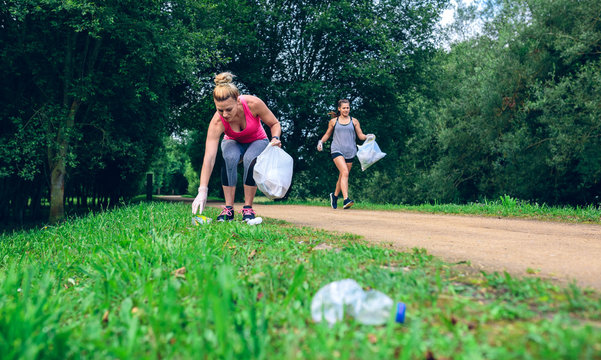

Che cos'è il Plogging?
La parola Plogging nasce unendo due azioni:
- Plocka upp: che in svedese significa "raccogliere".
- Jogging: correre a ritmo lento.
In pratica, il plogging consiste nel raccogliere i rifiuti che si trovano per strada o nei parchi mentre si fa attività fisica. È un modo per fare del bene a se stessi e, contemporaneamente, al pianeta.
1. Perché fa bene al corpo?
Fare plogging è più faticoso di una normale corsa, quindi ci aiuta a restare più in forma!
- Ci si muove di più: Non solo corriamo, ma dobbiamo abbassarci, rialzarci e piegarci continuamente.
- Muscoli più forti: Ogni volta che raccogliamo una bottiglietta, facciamo uno squat (un piegamento sulle gambe). Questo rinforza le gambe e i glutei.
- Allenamento completo: Portare il sacchetto dei rifiuti che diventa sempre più pesante aiuta ad allenare anche le braccia e l'equilibrio.

2. Perché fa bene al pianeta?
Il plogging ci insegna che la città è come se fosse "casa nostra" e dobbiamo averne cura.
- Cittadini attivi: Invece di aspettare che qualcun altro pulisca, ci diamo da fare noi. Questo si chiama senso civico.
- Meno inquinamento: Molti rifiuti, come la plastica, finiscono nei fiumi e poi nel mare, danneggiando gli animali. Raccoglierli subito evita questo disastro.
- L’esempio conta: Quando le persone vedono un "plogger" in azione, spesso si sentono incoraggiate a non buttare le carte a terra.
Il plogging è lo sport più generoso che esista: mentre tu bruci calorie, l'ambiente respira meglio. È la dimostrazione che anche un piccolo gesto, fatto da tante persone, può cambiare il mondo.